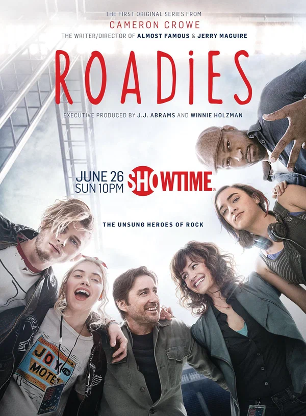

Фильмография
| Год | Русское название | Оригинальное название | Афиша | Примечание |
| 2014 | За кулисами | Beyond the Lights |  | Дебют в кино, роль рэпера Кида Калприта. |
| 2016 | Земля | The Land | Сопродюсер, соавтор и актёр. | |
| 2016 | Нерв | Nerve | Второстепенная роль. | |
| 2016 | Гастролёры< | Roadies |  | Повторяющаяся роль в телесериале. |
| 2018 | Птичий короб | Bird Box |  | Роль Феликса. |
| 2019 | Взрослеть на полную | Big Time Adolescence |  | Роль Снигги. |
| 2019 | Грязь | The Dirt | Роль барабанщика Томми Ли. | |
| 2019 | Капкан | Captive State | Роль Джермунта. | |
| 2020 | Проект «Сила» | Project Power |  | Роль Ньюта. |
| 2021 | Полночь на злаковом поле | Midnight in the Switchgrass |  | Роль второго плана, знакомство с Меган Фокс. |
| 2021 | Последний сын | The Last Son |  | Главная роль. |
| 2022 | Один путь | One Way |  | Главная роль. |
| 2022 | Телец | Taurus | Главная роль, фильм основан на его жизни. | |
| 2022 | Доброго траура | Good Mourning |  | Соавтор сценария и режиссёр, главная роль. |
| 2024 | Джекпот! | Jackpot! | Главная роль. |
© Все права защищены